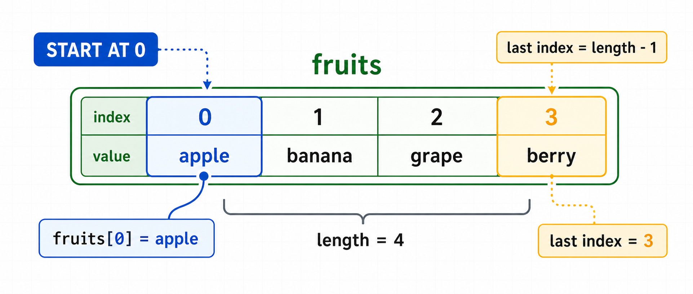
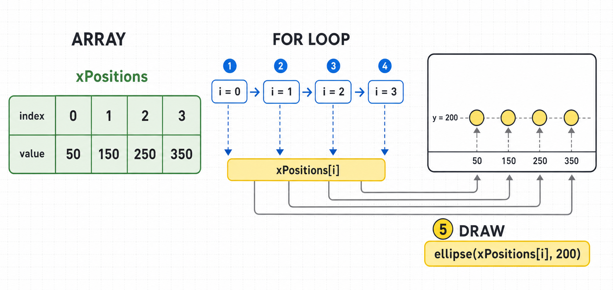
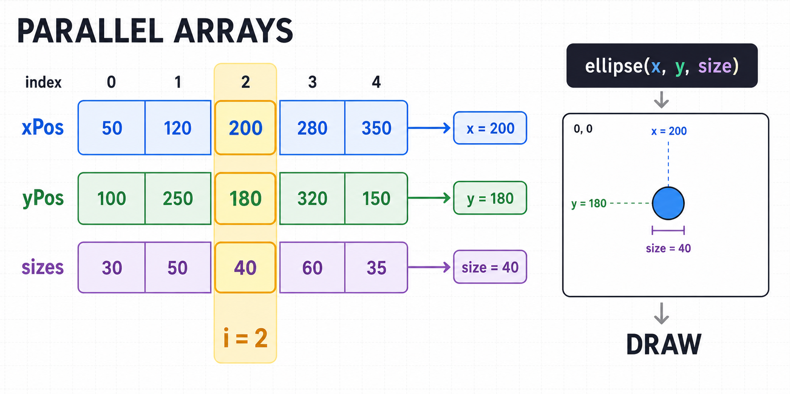

6주차 2교시 — 배열: 데이터를 한꺼번에 관리하자
강의 아웃라인: week-06-outline 이전 교시: week-06-period1-student (사용자 정의 함수) 다음 교시: week-06-period3-student (학생 주도 실습: 함수와 배열로 다중 오브젝트)
| 항목 | 내용 |
|---|---|
| 대상 | P5.js 입문자 (테크아트 전공) |
| 소요 시간 | 45분 |
| 사전 준비 | 1교시 사용자 정의 함수 (매개변수·반환값) |
- 배열을 선언하고 인덱스로 요소에 접근할 수 있습니다
-
.length·.push()로 배열을 조작할 수 있습니다 - 배열과
for문을 결합해 다수 데이터를 순회할 수 있습니다 - 배열·반복문·함수를 결합해 다수 오브젝트를 관리할 수 있습니다
1교시 복습
1교시에서 함수를 배웠습니다.
- 함수를 만드는 키워드는
function. drawBall(200, 300, 50)에서 200, 300, 50은 매개변수(인자).
함수가 있으니 공을 함수로 그릴 수 있습니다. 하지만 공 여러 개의 데이터를 관리하는 문제가 남아 있습니다. 이번 시간에 해결합니다.
심화 개념 1 — 배열이 필요한 이유
일상에서 찾는 배열
스마트폰 음악 앱의 플레이리스트를 떠올려보세요. 노래가 순서대로 들어 있죠?
내 플레이리스트:
1번 트랙: "Blinding Lights"
2번 트랙: "Dynamite"
3번 트랙: "Butter"
4번 트랙: "Levitating"이게 배열입니다. 같은 종류의 것들(노래)이 순서대로 나열되어 있습니다. 엑셀 시트의 한 열(A1, A2, A3…)도 마찬가지입니다.
왜 배열이 필요한가 — 변수의 한계
공 100개의 x좌표, y좌표, 속도를 저장하려면?
// 이렇게 하나씩 늘리면 곧 관리가 어려워집니다
let x1 = 10, x2 = 50, x3 = 90, x4 = 130, x5 = 170;
// ... x100 = ???변수 이름을 100개 짓고, 나중에 x47을 눈으로 찾는 방식은 유지보수가 어렵고 실수가 생기기 쉽습니다.
배열 = 번호가 매겨진 서랍장
변수 하나하나 = 이름표가 각각 붙은 상자들 (x1, x2, x3...)
배열 하나 = 번호가 매겨진 서랍장 (칸이 여러 개!)
[0번 칸] [1번 칸] [2번 칸] [3번 칸] [4번 칸]
| 10 | | 50 | | 90 | | 130 | | 170 |서랍장 하나에 이름 하나(xPositions)만 붙이면 되고, 각
칸은 번호(0, 1, 2, …)로 접근합니다. 변수 100개 대신 배열 1개면
충분합니다.
심화 개념 2 — 배열 선언과 인덱스
배열 만들기
배열은 대괄호 []로 만듭니다.
// 빈 배열 — 아직 아무것도 안 넣은 빈 서랍장
let xPositions = [];
// 값을 넣으면서 만들기 — 서랍장에 미리 물건을 채워놓은 것
let scores = [95, 80, 70, 100, 88];
// 문자열, 색상값 등 다른 것도 넣을 수 있어요
let names = ["Alice", "Bob", "Charlie"];인덱스 — 0부터 시작하는 번호표
배열의 각 칸에는 인덱스(번호)가 붙어 있고, 번호는 0번부터 시작합니다. 유럽 건물의 Ground Floor(0층)처럼요.
let fruits = ["사과", "바나나", "포도", "딸기"];인덱스: [0] [1] [2] [3]
값: "사과" "바나나" "포도" "딸기"접근할 때는 배열이름[인덱스번호]로 합니다.
console.log(fruits[0]); // "사과" ← 0번째
console.log(fruits[1]); // "바나나" ← 1번째
console.log(fruits[3]); // "딸기" ← 3번째요소가 4개면 마지막 인덱스는 3입니다 (4가 아니라). 0부터 시작하니까 0, 1, 2, 3.
없는 인덱스에 접근하면?
console.log(fruits[10]); // undefined ← 10번 칸은 없으니까!에러는 아니고 undefined(정의되지 않음)가 나옵니다.
코드가 예상과 다르게 동작할 때 undefined가 보이면 배열
인덱스 접근을 먼저 확인하세요.
let animals = ["고양이", "강아지", "토끼", "앵무새", "햄스터"];
animals[0]은? → “고양이”animals[3]은? → “앵무새”animals[5]는? → undefined (5번 칸 없음!)- 마지막 요소의 인덱스는? → 4 (5개니까 0~4)

값 바꾸기
let fruits = ["사과", "바나나", "포도", "딸기"];
fruits[1] = "수박"; // 1번 칸의 "바나나"를 "수박"으로 교체!
console.log(fruits); // ["사과", "수박", "포도", "딸기"]마이크로 실습 A — 내 배열 만들어보기
좋아하는 것 3가지를 배열로 만들고, 콘솔에 출력해보세요.
function setup() {
createCanvas(400, 400);
// 예: 좋아하는 음식, 영화, 색상 등
let favorites = ["피자", "파스타", "떡볶이"];
console.log("전체:", favorites);
console.log("첫 번째:", favorites[0]);
console.log("마지막:", favorites[2]);
}실행해서 콘솔에 값이 제대로 나오면 성공입니다.
심화 개념 3 — 배열 조작: length와 push
배열 길이: .length
배열에 몇 개의 요소가 있는지 알려줍니다.
let fruits = ["사과", "바나나", "포도", "딸기"];
console.log(fruits.length); // 4.length는 개수(4)이고, 마지막 인덱스(3)와는 다릅니다.
항상 length = 마지막 인덱스 + 1.
요소 추가: .push()
배열 맨 뒤에 새 요소를 추가합니다.
let fruits = ["사과", "바나나"];
console.log(fruits.length); // 2
fruits.push("포도");
console.log(fruits); // ["사과", "바나나", "포도"]
console.log(fruits.length); // 3 ← 하나 늘었다!push()는 나중에 “클릭할 때마다 공 추가하기”에서 유용하게
쓰입니다.
라이브 코딩 — 배열 만들고 조작해보기
function setup() {
createCanvas(400, 400);
let numbers = [10, 20, 30, 40, 50];
console.log("배열 전체:", numbers);
console.log("첫 번째:", numbers[0]);
console.log("길이:", numbers.length);
// 60을 추가해보자
numbers.push(60);
console.log("추가 후:", numbers);
// 값을 바꿔보자
numbers[0] = 999;
console.log("변경 후:", numbers);
}numbers[5]는 push 하기 전에는 뭘까요?
답: undefined — 아직 그 칸이 없으니까.
심화 개념 4 — 배열 + 반복문: 수동에서 자동으로
배열은 반복문과 결합할 때 가장 유용합니다. 3주차
for문을 다시 가져옵니다.
Step A — 수동으로 하나씩 그리기
let xPositions = [50, 150, 250, 350];
function draw() {
background(220);
// 하나씩 수동으로 그리기
ellipse(xPositions[0], 200, 40, 40);
ellipse(xPositions[1], 200, 40, 40);
ellipse(xPositions[2], 200, 40, 40);
ellipse(xPositions[3], 200, 40, 40);
}원이 100개면 ellipse()를 100번 써야 할까요? 여기서
패턴이 보입니다 — 대괄호 안의 숫자만 0, 1, 2, 3으로 바뀝니다.
Step B — 패턴 발견: 숫자만 바뀐다!
ellipse(xPositions[0], 200, 40, 40); ← 0
ellipse(xPositions[1], 200, 40, 40); ← 1
ellipse(xPositions[2], 200, 40, 40); ← 2
ellipse(xPositions[3], 200, 40, 40); ← 30, 1, 2, 3을 i로 바꾸면
ellipse(xPositions[i], 200, 40, 40).
Step C — for문으로 자동화!
let xPositions = [50, 150, 250, 350];
function draw() {
background(220);
for (let i = 0; i < xPositions.length; i++) {
ellipse(xPositions[i], 200, 40, 40);
}
}4줄이 2줄로 줄었고, 배열에 값을 100개 넣어도 이 for문
코드는 그대로입니다.
실행 흐름 트레이싱:
| 반복 | i의 값 | xPositions[i]의 값 |
실행되는 코드 |
|---|---|---|---|
| 1번째 | 0 | 50 | ellipse(50, 200, 40, 40) |
| 2번째 | 1 | 150 | ellipse(150, 200, 40, 40) |
| 3번째 | 2 | 250 | ellipse(250, 200, 40, 40) |
| 4번째 | 3 | 350 | ellipse(350, 200, 40, 40) |
| 종료 | 4 | — | 4 < 4는 false → 반복 끝! |

이 패턴은 통째로 외워두세요.
for (let i = 0; i < 배열이름.length; i++) {
// 배열이름[i]로 각 요소에 접근
}마이크로 실습 B — for문으로 원 여러 개 그리기
배열에 x좌표 5개를 넣고, for문으로 원을 그려보세요.
let xPos = [40, 120, 200, 280, 360];
function setup() {
createCanvas(400, 400);
}
function draw() {
background(30);
noStroke();
for (let i = 0; i < xPos.length; i++) {
fill(100 + i * 30, 150, 255); // 색상도 i에 따라 변화
ellipse(xPos[i], 200, 40, 40);
}
}원 5개가 가로로 나란히, 색이 조금씩 다르게 나오면 성공입니다.
도전: xPos 배열에 값을 3개 더
추가해보세요. for문 코드를 수정할 필요가 있나요? (없어요!
.length가 자동으로 바뀌니까!)
심화 개념 5 — 배열 여러 개로 다양한 원 그리기
x좌표만이 아니라 y좌표, 크기도 배열로 만들면 각각 다른 위치와 크기의 원을 그릴 수 있습니다.
let xPos = [50, 120, 200, 280, 350];
let yPos = [100, 250, 180, 320, 150];
let sizes = [30, 50, 40, 60, 35];
function setup() {
createCanvas(400, 400);
}
function draw() {
background(30);
noStroke();
for (let i = 0; i < xPos.length; i++) {
fill(100 + i * 30, 150, 255);
ellipse(xPos[i], yPos[i], sizes[i], sizes[i]);
}
}같은 인덱스 i로 여러 배열에 동시에 접근합니다. i번째
공의 x좌표, y좌표, 크기를 한꺼번에 꺼내는 것입니다 — 학생부에서 ’3번
학생’을 찾으면 이름·학번·전화번호를 한 줄에서 다 볼 수 있는 것처럼.

심화 개념 6 — 배열 + 함수: 다수의 오브젝트 관리
1교시의 함수와 방금 배운 배열을
결합합니다. 이게 오늘 수업의 핵심 패턴입니다. random()과
push()로 배열을 자동으로 채울 수 있습니다.
let xPos = [];
let yPos = [];
let sizes = [];
let ballCount = 5;
function setup() {
createCanvas(400, 400);
// 빈 배열에 랜덤 데이터를 push()로 채우기
for (let i = 0; i < ballCount; i++) {
xPos.push(random(width));
yPos.push(random(height));
sizes.push(random(20, 60));
}
}
// 1교시에서 배운 함수!
function drawBall(x, y, size) {
fill(255, 100, 100);
noStroke();
ellipse(x, y, size, size);
}
function draw() {
background(30);
// 배열 + 반복문 + 함수 = 한 번에 여러 개 그리기
for (let i = 0; i < ballCount; i++) {
drawBall(xPos[i], yPos[i], sizes[i]);
}
}배열에 데이터를 넣고, 반복문으로 돌며, 함수로
그린다. 이 패턴만 익히면 공 5개든 100개든 1000개든 만들 수
있습니다. ballCount만 바꾸면 됩니다.
실전 사례 — 움직이는 공 여러 개
5주차에서 배운 바운싱을 배열에 적용해서 움직이는 공 여러 개를 만듭니다. 공 10개를 움직이려면 x좌표·y좌표·x속도·y속도가 각각 10개씩 — 배열 4개면 됩니다.
let xPos = [], yPos = [];
let speedX = [], speedY = [];
let sizes = [];
let numBalls = 10;
function setup() {
createCanvas(400, 400);
for (let i = 0; i < numBalls; i++) {
xPos.push(random(width));
yPos.push(random(height));
speedX.push(random(-3, 3));
speedY.push(random(-3, 3));
sizes.push(random(15, 45));
}
}
function drawBall(x, y, size, index) {
colorMode(HSB, 360, 100, 100);
fill(index * 36, 80, 90); // 인덱스마다 다른 색상!
noStroke();
ellipse(x, y, size, size);
colorMode(RGB);
}
function moveBall(index) {
// 5주차의 x += speedX 를 배열 버전으로!
xPos[index] += speedX[index];
yPos[index] += speedY[index];
// 벽 바운싱도 배열 버전으로
let r = sizes[index] / 2;
if (xPos[index] > width - r || xPos[index] < r) {
speedX[index] *= -1;
}
if (yPos[index] > height - r || yPos[index] < r) {
speedY[index] *= -1;
}
}
function draw() {
background(20);
for (let i = 0; i < numBalls; i++) {
moveBall(i);
drawBall(xPos[i], yPos[i], sizes[i], i);
}
}이 코드에서 numBalls를 10에서 100으로 바꿔보세요. 코드
다른 곳은 하나도 안 바꿔도 공 100개가 돌아다닙니다.
마우스 클릭으로 공 추가하기 — push() 활용
function mousePressed() {
xPos.push(mouseX); // 클릭한 x좌표
yPos.push(mouseY); // 클릭한 y좌표
speedX.push(random(-3, 3)); // 랜덤 속도
speedY.push(random(-3, 3));
sizes.push(random(15, 50)); // 랜덤 크기
numBalls++; // 공 개수 1 증가
}모든 배열에 push()로 새 데이터를 추가하면, 다음
draw()에서 for문이 새 공까지 자동으로
그려줍니다. .length가 자동으로 바뀌니까요.
정리
- 배열은 같은 종류의 데이터를 번호(인덱스)로 관리하는 서랍장 — 0번부터 시작!
- 배열 + for문으로 데이터 100개든 1000개든 반복 처리할 수 있다
- 배열 + for문 + 함수 = 다수의 오브젝트를 한 번에 관리하는 핵심 패턴
3교시 실습 안내
3교시에는 함수와 배열을 결합해서 움직이는 공 여러 개 스케치를 만듭니다.
기대 결과물 - 최소 10개의 공이 화면 안에서 각각 독립적으로 움직인다 - 각 공은 벽에 부딪히면 튕긴다 - 공마다 크기와 색상이 다르다 - (선택) 마우스 클릭으로 새 공을 추가할 수 있다
먼저 drawBall() 함수부터 만들고, 배열을 선언하고,
setup()에서 데이터를 채우고, draw()에서
반복문으로 돌리면 됩니다.
7주차 예고
실습하면서 느끼겠지만, 공 하나의 데이터가 x배열, y배열, speedX배열처럼 여러 배열에 흩어져 있습니다. 이 불편함이 다음 주에 배울 class의 출발점입니다. class를 쓰면 공 하나의 모든 데이터를 하나로 묶을 수 있습니다.